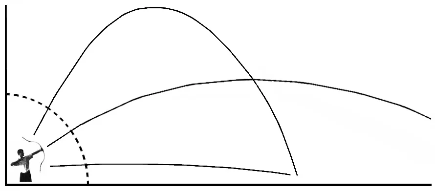
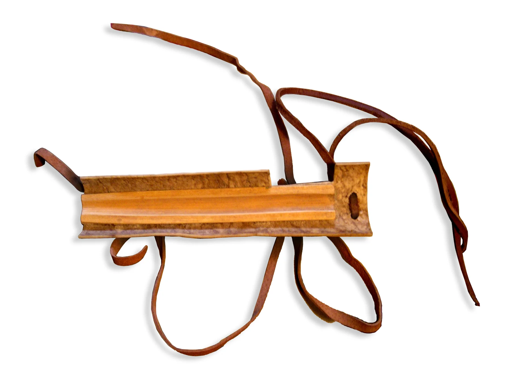
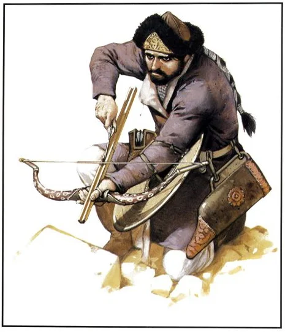

PONTLÖVÉS, NYILZÁPOR
A hagyományos íjaknak kétféle alkalmazását különböztethetjük meg. A fegyver hatótávolságát leginkább kiaknázó nyilzápor technikát és az íjkezelés alapját, a pontlövést.
A nyilzápor nagy távolságban levő célpontra csoportosan, egyidőben leadott lövésegyüttes, amelyet általában célterület beszórására alkalmaznak. Sikerét az egyéni teljesítmények és azok összehangoltsága határozzák meg. Egyénileg vagy kis létszámban végrehajtva - statikus céltárgy meglövését kivéve - értelmetlen stratégiája ez az íj használatának. Felkészült íjászokból álló tömeg, vagyis legalább tíz, de inkább ennél több íjász azonban e technikával rendkívül eredményes lehet.
Nyilzápor lövéskor az íjász célja a nyilvessző meghatározott célterületre juttatása, de természetesen a céltárgy vagy célalak eltalálására törekedve.

Pontlövés: az egyénileg is eredményes, kis távolságból leadott lövés. Pontlövéskor az íjász minden lövésnél biztos találat elérésére törekszik. Célzáskor a teljes célfelület egy kis pontját veszi célba, és azt igyekszik eltalálni. Éles helyzetben például a vértezet réseit vagy a pajzs által védtelenül hagyott testfelületet. A lövések tehát kis célfelületre koncentrálódnak.
Pontlövés közben az íjász célzáskor a célpont távolságának függvényében engedi le vagy emeli felfelé a nyilhegyet, vagyis minél távolabb van a cél, annál meredekebb röppályán lövi ki a nyilvesszőt. (A célzás technikájáról szóló fejezetben ismertetett módon.) A nyilzápornál éppen fordított a helyzet. A meredek röppályán leadott lövés távolságát a nyilhegy emelésével lehet csökkenteni, leeresztésével pedig növelni az íj hatótávolságának maximumáig. Tehát minél távolabb van a cél, annál laposabb röppályán lehet csak eltalálni. A távolság csökkenését pedig az íjász a nyilhegy emelésével, azaz a röppálya meredekségének növelésével kompenzálja. (Az íj rövidebb-hosszabb feszítésével nem célszerű manipulálni, mert bár a rövidebb feszítéssel leadott lövés rövidebbé válik, az így kilőtt nyilvesszőnek nagymértékben csökken az átütőereje.)

Az íjak lőtávolságát sokan sokféleképpen határozzák meg. Egyesek csodálatra méltó legendákat és kivételes teljesítményeket is hajlamosak általánosítani e kérdés megválaszolására.
Az elméleti elgondolások nyomán úgy terjedt el a köztudatban, hogy az ilyen jellegű támadásokat ellenfeleik lőtávolán kívülről intézték. Ez a feltételezés viszont azt jelenti, hogy ellenfeleikéhez képest mindenképpen nagyobb teljesítményű fegyverekkel kellett rendelkezniük. Vajon lehetséges ez?
